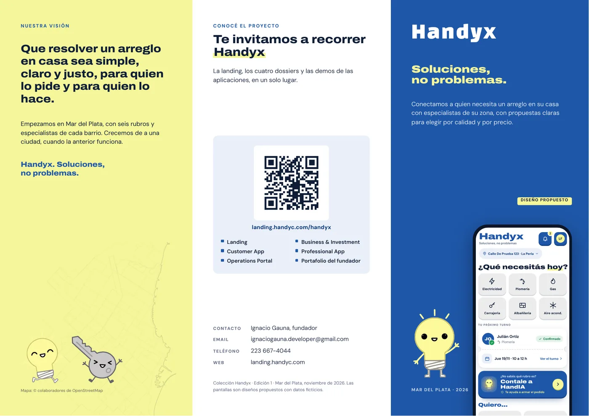
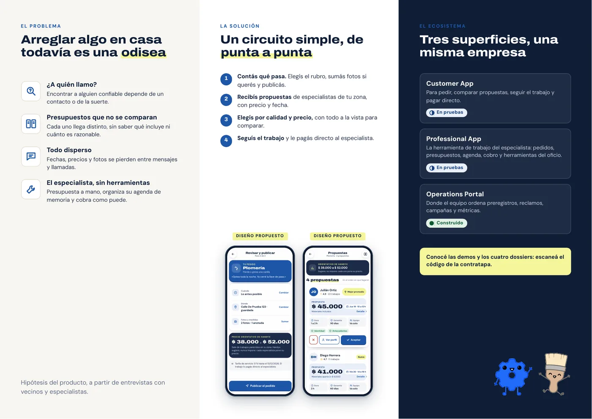

A4 apaisado (297 × 210 mm), doble faz, con 3 mm de sangrado por lado en el PDF de imprenta. Dos pliegues verticales; el panel de 97 mm es la solapa que se pliega hacia adentro primero. Las líneas rojas punteadas marcan los pliegues: no se imprimen.

3 · Solapa (cierre)2 · Contratapa1 · Portada 97 mm100 mm100 mm
4 · El problema5 · La solución6 · El ecosistema 100 mm100 mm97 mmCon la cara interior hacia arriba, plegá el panel 6 (el de 97 mm, a la derecha) sobre el panel 5.
Plegá el panel 4 (izquierda) encima: queda arriba la portada (panel 1) y atrás la contratapa (panel 2).
Al abrir la portada se ve la solapa (panel 3) junto al problema; abierto del todo, el interior completo.
| Formato final | 297 × 210 mm, plegado a 100 × 210 mm |
| Archivo | Handyx-Triptico-imprenta.pdf · 2 páginas (exterior, interior) · 303 × 216 mm con sangrado · TrimBox y BleedBox |
| Papel sugerido | Ilustración mate 170 g, doble faz; con hendido en los pliegues |
| Color | RGB; pedir prueba de color antes de una tirada grande |
| Volteo | Por el lado largo (las dos caras quedan derechas) |